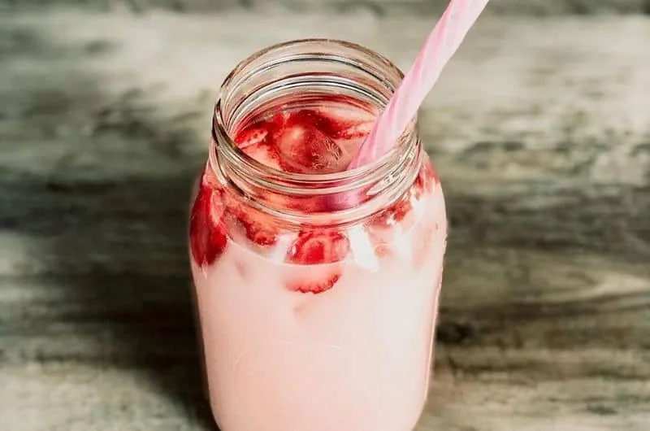
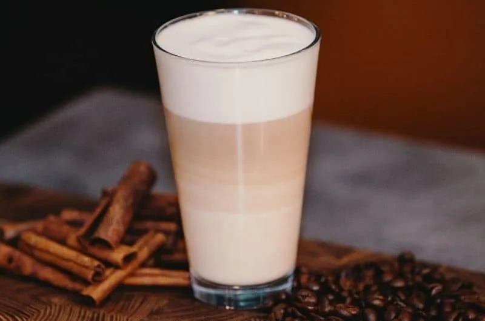

Pink Drink
Ingredients:
- 1/2 cup white grape juice
- 1 cup hot boiling water
- 4 packs acai berry tea
- Agave nectar
- Fresh Strawberries
- 1 to 2 cups unsweetened coconut milk
- Put the unwrapped tea packets in a 2-cup glass measuring cup, and pour hot, boiling water over them.
- Allow the tea packets to sit until cool, and then squeeze them out and toss.
- Add the white grape juice in the tea.
- Add as much ice as you want in a glass and pour one cup of the tea mixture.
- Fill the rest of the glass with coconut milk.
- Slice the fresh strawberries and add them to the drink.
- Add as much agave nectar as you want to make it perfect for your taste.
- Serve and Enjoy!
Directions:

Chai Tea Latte
Ingredients:
- 2 x teabags (your favorite chai tea)
- 1/2 cup of water
- 1-2 cups whole milk
- 4 teaspoons honey
- Powdered Cinnamon
- Powdered Nutmeg
- Take a small pan and add the water. Once the water has come to a rolling boil, turn off the heat and add your teabags. Allow a minimum of 5 minutes for your tea to steep and infuse into the water.
- Add your milk to the pan and place over medium heat. You aren’t trying to boil the milk. Just make it so that fine bubbles begin to appear. Once this happens, remove the tea bags and add your honey.
- Give the chai a good stir, and then using a milk foamer, get your milk nice and foamy.
- Pour the Starbucks chai tea latte equally between two thick glasses or a mug. Garnish with a pinch of nutmeg and cinnamon.
- Relax and enjoy
Directions:
Flat White Coffee
Ingredients:
- 1 cup milk, steamed (preferably whole milk)
- 2 shots of espresso, or 3 ounces
- Sugar (optional)
- Prepare 3 ounces of espresso or 2 shots and pour them into the cup.
- If you want a sweeter flat white, add sugar to the espresso.
- Steam one cup of milk and froth it for at least 60 seconds using a milk frother, or until it creates a microfoam. If you don’t have a milk frother, feel free to use a mason jar with a lid. Pour the milk into the jar, close it, and shake vigorously.
- Pour the hot microfoam over the espresso until there’s a dot of foam on top.
- Drink your homemade flat white while hot.